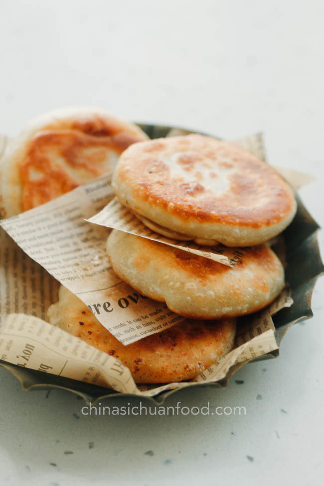

Xian Bing

Description
Here is one of the most delicious and easy recipes in the world.
Simple and infinitely customisable, you can make them big or small, spicy or sweet.
But, to be honest, the original recipe is perfect on its own.
Full credit to chinasichaunfood.com for the picture and recipe used in this exercise.
Ingredients:
Filling
- 300g Beef
- 2 Large Spring Onions
- 1/2 tsp. Sichaun Peppercorn Powder
- 1/2 tsp. Salt
- 1 tbsp. Ginger
- 1 tbsp. Soy Sauce
- Pinch of White Pepper
- 1 Egg
- 1 tbsp. Oyster Sauce
- 1 tbsp. Sesame Oil
- 1/2 tsp. Sugar
- 1 tbsp. Shaoxing Wine
- 1/2 Onion
For the Dough
- 2 cups Plain Flour
- 1/2 cup Just-boiled water(not bubbling)
- 60ml Room Temperature Water
- 1 tbsp. Unflavoured Oil
- Pinch of Salt
Steps:
Filling
- Add beef, ginger, spring onions, onions, salt, sugar, Sichuan peppercorn powder and white pepper powder. Blend for 10 seconds if using whole fillets of beef, or simply chop onions and mix if using mince. Add egg, soy sauce, sesame oil, Shaoxing wine and oyster sauce. Blend or mix for another 10 seconds. Stir the filling by hand for a few minutes until sticky. The mixture will be VERY wet.
- Place in fridge and allow to set slightly as you make the pastry.
Dough
You now have a choice to make, if you want a lot of filling, make one batch of pastry. If you want the filling to go as far as it can, make two.
- Add salt to the flour and then add all the hot water. Then gently stir it in, next add the room temperature water, and stir through. Roughly knead to form a dough, it doesn't need to be smooth. Cover and set aside for 30 minutes.
- After 30 minutes, re-knead the dough, it should become smooth very quickly. Cut into 50g portions then roll out to form a wrapper (approximately 10 per batch). Place some mixture in the centre of the wrapper (its your choice, could be 1 tsp. - 3 tbsp) then seal it completely by bringing two opposing sides of the pastry up, sealing it perfectly, then seal the remaining two sides. Be sure to avoid the edges meeting the filling, otherwise the seal will fail. Place completed Xian Bing in a wet teatowel as you finish the rest.
Frying
- Place the pancakes in a pan with oil, seal side down. Lightly press down to flatten the pie slightly.
- Heat until it becomes crispy. Then turn over and fry the other side. Once the two sides are well browned, turn the heat down, cover and fry for 3-5 minutes to cook the filling.